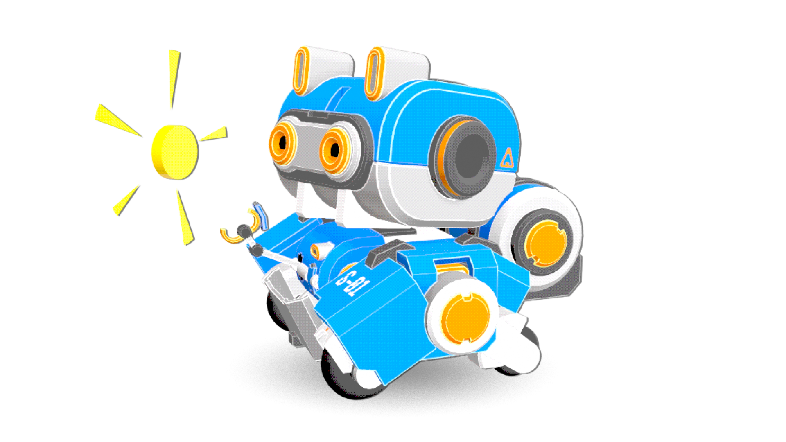

You can help with a coin
Donations will help us grow.

It's not easy, but here we are
It's never easy to ask people for their money with a simple "trust me bro, we'll do it great", so we decided to make a small project, with grounded expectations, opted to leave in game monetization up to the player and no paywalls at all. We truly want to keep it that way.
Our goal is to generate trust with our player base, and all the people that wishes to support us, thats why we made a game that we could develop without compromising our personal lives, a game that we can enjoy working on, a game that hopefuly people can enjoy as well.
We are new to all of this and we may make mistakes along the way, but we don't want to leave without trying it.
Being honest we don't need millions to keep ourselves going, just enought to pay bills, feed and shelter our CEO and keep working in what we love.
We don't want your money if you can't afford it, if you still want to support, just share the game with your friends and family, subscribe to our Youtube channel , follow us on our social media, X , Facebook , Instagram , or watch and ad or two while you play our game.
In case you want to help us more directly, you can do so by making a donation on Ko-fi or becoming a Patreon, the links are at the bottom of this page.
Thanks for your time, and remember, life is a precious thing, don't put a stop to your dreams, chase them.
Watch Ads
You can support us by simply watching the integrated ads in the game, they are completely optional, you can watch an ad or two in your play sessions or none, is up to you.
Direct Donation
You can make a direct donation to us using Ko-fi.
Subscribe
You can subscribe to us on Patreon.